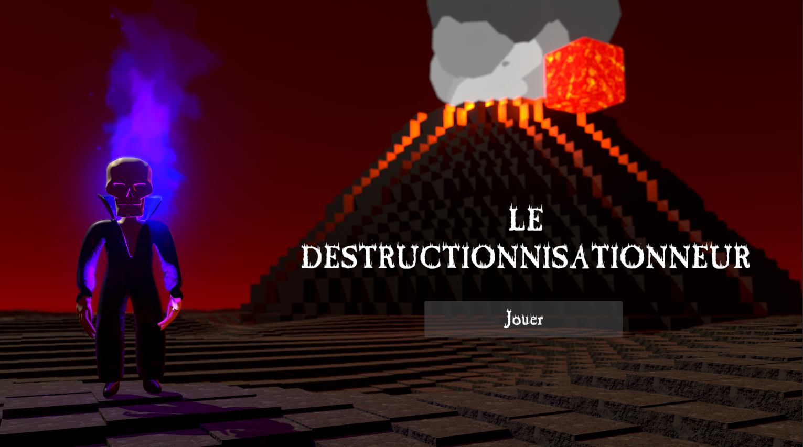
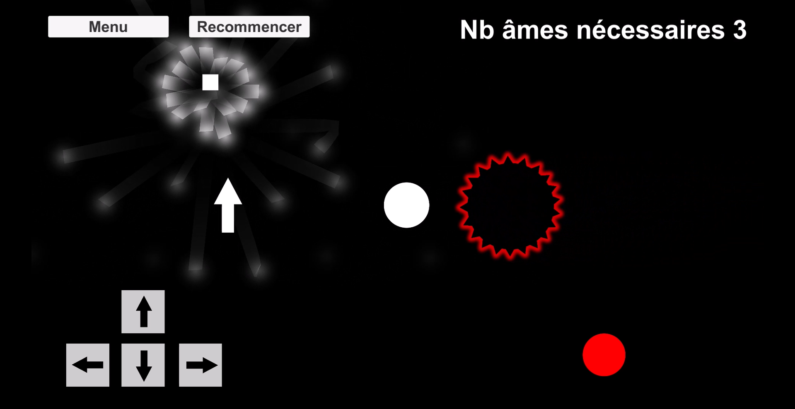
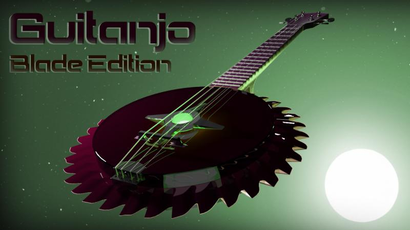

Mes Projets
Le destructionnisationneur
Jeu 3D bac à sable mettant le joueur dans la peau d'un squelette devant détruire des îles grâce à ses différents pouvoirs. Utilise Unity et C#.
 Voir le projetCompétences acquises
- Génération procédurale
- ShaderGraph
- Leadership
Astrobeau
Jeu de plateforme mettant le joueur contre la montre alors que celui-ci fonce droit vers un trou noir. Utilise Unity et C#.
 Voir le projet
Voir le projet
Compétences acquises
- Communication
- Création de mécaniques de plateforme
- Programmation d'IA
Un jeu formidable (Le jeu)
Petit jeu de puzzle demandant au joueur de parcourir 3 salles distinctes. Développé avec Unity en C#.
 Voir le projet
Voir le projet
Compétences acquises
- Conception de niveaux
- Utilisation de Particle System
- Résolution de puzzles ludiques
Un très bon jeu (Le jeu)
Concept de jeu mélangeant des éléments du jeu Humanity et du jeu Dark Echo. Développé avec Unity.
 Voir le projetCompétences acquises
- Intégration de sons immersifs
- Prototypage rapide de concepts de jeu
- Écriture de scénario
Guitanjo: Blade Edition
Guitare-banjo modélisée et texturée dans 3ds Max.
Compétences acquises
- Modélisation 3D avancée
- Texturage dans 3ds Max
- Maîtrise des outils de rendu